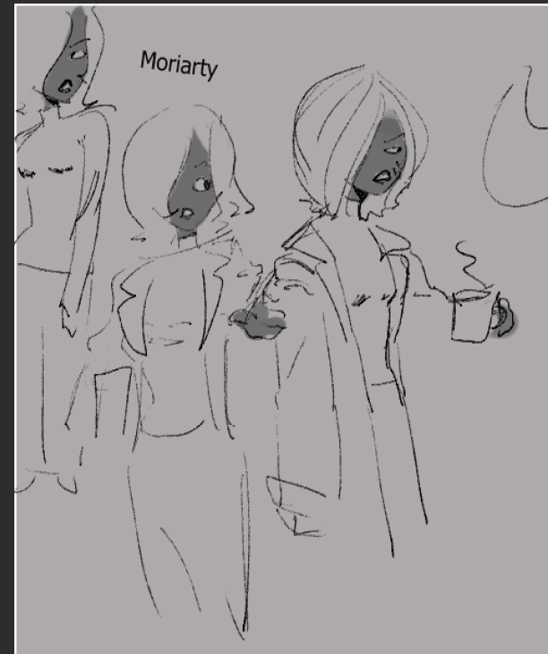
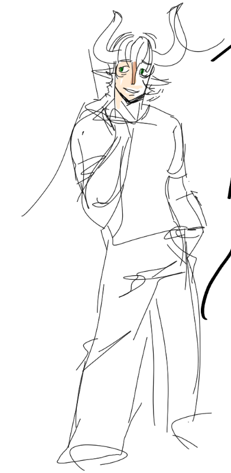

Characters
All of these sub pages are just supposed to be examples of what you could do, you're definitely encouraged to mess around with them and come up with something better

Moriartykeeping the peace |

Variankeeps his cool for sure ..... for suuuuer |

AlaunA precocious, smart mouthed little guard, lalest and elfsih. how long can he hide? |

Goro MajimaAfter losing his eye and the trust of his sworn brother in a botched assassination, Majima clawed his way out of debt and through the ranks of the Yakuza to become Captain of the Shimano Family, where his ferocity and unpredictability in battle earned him the title "The Mad Dog of Shimano". He's now the patriarch of the Majima Family, a direct subsidiary of the Tojo Clan. |